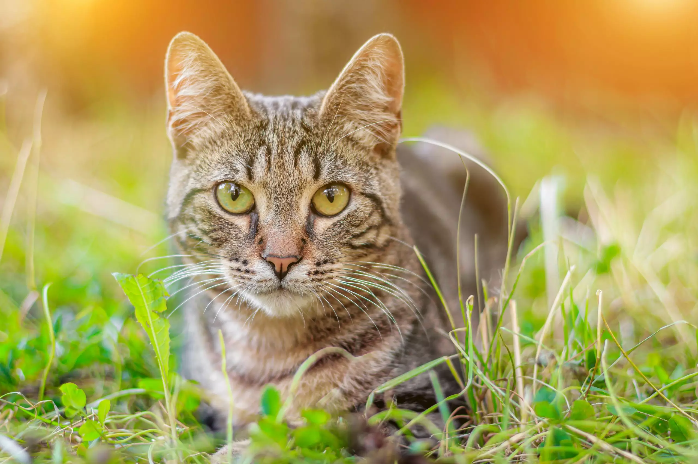

### 8.2 Criando uma Galeria de Imagens Responsiva
<!DOCTYPE html>
<html lang="pt-br">
<head>
    <meta charset="UTF-8">
    <meta name="viewport" content="width=device-width, initial-scale=1.0">
    <title>Galeria de Imagens</title>
    <link rel="stylesheet" href="css/style.css">
</head>
<body>
    <div class="gallery">
        
        
        
        
        
        
    </div>
</body>
</html>
